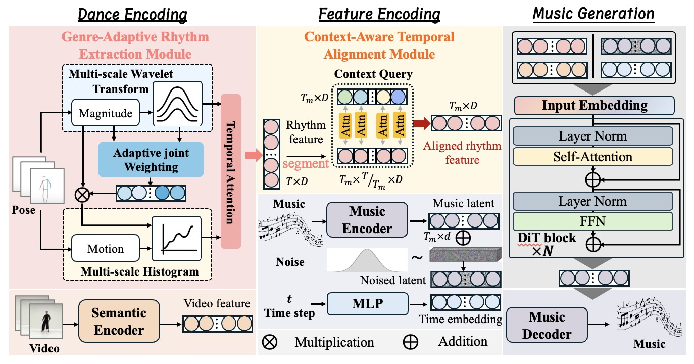

GACA-DiT: Diffusion-based Dance-to-Music Generation with Genre-Adaptive Rhythm and Context-Aware Alignment
Jinting Wang1, Chenxing Li2, Dong Yu2, Li Liu1
1 The Hong Kong University of Science and Technology (Guangzhou)
2 Tencent AI Lab
Abstract: Dance-to-Music (D2M) generation aims to automatically compose music that is rhythmically and temporally aligned with dance movements. Existing approaches often rely on coarse rhythm cues, which lose fine-grained details and lead to weak synchronization. We introduce GACA-DiT, a diffusion transformer framework designed to generate high-quality, rhythm-consistent music from dance. Our method features two key innovations: (1) a genre-adaptive rhythm extraction module that captures fine-grained, style-specific rhythm patterns through multi-scale analysis and adaptive joint weighting, and (2) a context-aware temporal alignment module that addresses cross-modal temporal mismatches for precise synchronization. Experiments on AIST++ and TikTok datasets show that GACA-DiT surpasses state-of-the-art baselines in both objective evaluations and user studies, producing music that better matches the dynamics of dance.
GACA-DiT Framework
